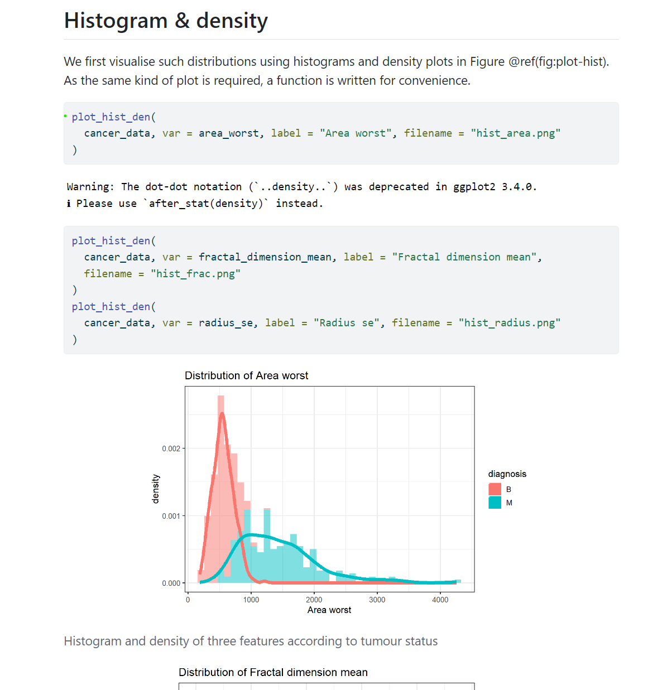

4. An Introduction to Quarto
4.1 What’s Our Goal? 🎯
Welcome to Quarto!
By the end of this chapter, you’ll have a solid understanding of Quarto and how to use it to create reproducible, visually appealing scientific reports, presentations, and publications.
4.2 What is Quarto, and Why Does It Matter? 📖
Quarto isn’t just a new version of R Markdown; it’s a powerful tool made by Posit for data scientists, researchers, and anyone sharing knowledge. Built on Pandoc, this free tool works with many programming languages like R, Python, and Julia, and lets you create documents in formats such as HTML, PDF, and Word.
Why Quarto is great: - Works with many languages: Facilitates seamless integration of R, Python, Julia, and Observable JS, catering to interdisciplinary projects. - Versatility in Output Formats: From academic PDFs to web pages and presentations, Quarto adapts your work for any audience. - Guaranteed Reproducibility: Ensures your research can be easily verified, fostering a culture of transparency and reliability.
Quarto also lets you: - Make websites: Share your projects online. - Create learning materials: Build tutorials or textbooks for online learning.
Check out the Quarto gallery to see its capabilities.
4.3 Before We Begin
In this part of the tutorial, we’ll focus on using Quarto with R. But remember, Quarto isn’t limited to R — it also works with Python, Julia, and Observable JS!
Installation Guide
Before we start, it’s essential to set up our environment. Here’s what you need:
-
RStudio Installation: Ensure you have the latest version of RStudio. This will provide the best compatibility with Quarto.
-
Quarto Installation: Visit the Quarto website for installation instructions. For a more detailed guide, check out the Quarto guide. Make sure to follow the steps appropriate for your operating system.
-
TinyTeX Setup TinyTeX is a minimal TeX distribution specifically tailored for Quarto, which you’ll need for generating PDFs. Here’s how to install it: - Open RStudio, navigate to Tools > Terminal > New Terminal. - In the terminal, type quarto install tinytex to start the installation process.
-
Update R Packages To ensure smooth operation with Quarto, update the following R packages by running this command in RStudio:
# Run in R
install.packages(c(
"tinytex", # Needed for PDF rendering
"rmarkdown", # Essential for rendering
"tidyverse", # Useful for data wrangling
"knitr", # Required for table printing
"kableExtra" # Enhances table printing
))
4.4 Let’s Dive In!
The Quarto Workflow
Quarto simplifies document creation through a two-step process:
- Code Execution: Your Quarto document (
.qmd) is first processed by knitr, which executes the code chunks embedded within the document, producing an intermediate Markdown (.md) file that includes both the original code and its output. - Final Rendering: The Markdown file is then handed over to pandoc, which converts it into the final document in the desired output format. This process is highly flexible, supporting a wide array of formats including HTML, PDF, and Word documents.
[Include a visual diagram of the Quarto workflow here]
Understanding the Quarto Document
Quarto documents bring together code, results, and narrative in a single file, enhancing reproducibility and clarity. Here are the key components:
- The YAML Header: At the start of your document, the YAML header specifies important settings for document rendering, such as title, author, output formats, and more. This metadata is crucial for controlling the appearance and behavior of your final document.
- Quarto-formatted Text: Narrative text follows Markdown syntax, allowing for straightforward formatting of headers, lists, links, and more. This makes your document both readable and versatile.
- R Code Chunks: Enclosed by three backticks (```), code chunks can contain R code (or other supported languages) for executing within your document. These chunks can perform data analysis, visualize results, and more. You can directly copy and paste existing R scripts into these chunks, with Quarto handling the execution and integration of results into the final document.
Quarto’s flexibility extends to supporting multiple programming languages within the same document, facilitating interdisciplinary collaboration and analysis.
Example Code:
# ----read-data----
cancer_data <- read.csv("data/breast-cancer-wisconsin.csv")
head(cancer_data)
cancer_data$diagnosis <- as.factor(cancer_data$diagnosis)
Creating Your First Quarto Document

Figure A: An example of a Quarto document in RStudio, showcasing integrated code and results.
To start creating your own Quarto document in RStudio:
- Go to File > New File > Quarto Document….
- Follow the prompts in the wizard to configure your document, choosing from a variety of templates and settings to suit your project’s needs.
YAML Header (Metadata)
The YAML metadata in a Quarto document is crucial for defining the document’s metadata, which influences its rendering. This metadata includes details like the document’s title, author, desired output format, and other rendering options. It’s encapsulated by three dashes (---) at the top of the document.
Example YAML Header:
---
title: "Insightful Analysis"
author: "Jane Doe"
execute:
echo: false
format: html
---
This header sets up the document with a title, an author, specifies that code echoes should be suppressed (echo: false), and designates HTML as the output format.
Rendering a Qmd Document
Rendering a .qmd (Quarto Markdown) document transforms it into a different format like HTML, PDF, or Word. This process compiles your code and applies settings from the document’s YAML header. Before rendering, ensure your document is error-free.
Steps to Render Your Document:
-
Save Your Document: Name it
my_first_qmd.qmdand save it in an accessible location. -
Render: Locate and click the “Render” button in your Quarto editor. This button is often found at the top or bottom of the editor interface.
FIGURE: ![Insert a screenshot of the “Render” button here.]
Excercise: Produce your own Quarto document
- Create a new Quarto document in your editor (e.g., RStudio).
- Add a title and your name as the author in the YAML header.
- Set the output format to HTML.
- Render the document.
Solution
- Create Document: In RStudio, use
File > New File > Quarto Document. - Edit YAML Header: Add
title: "Your Title"andauthor: "Your Name". - Set Output: Ensure the YAML includes
format: html. - Render: Click the “Render” button to produce your HTML document.Here are some potential problems we can think of (you may have similar):
Insert screenshots demonstrating each step for clarity.
To do : *[Provide screenshots of the solution here]* or describe it
4.5 Writing Quarto Documents
RStudio Visual Editor: Simplified Formatting
The RStudio Visual Editor offers a user-friendly approach to formatting Quarto documents, featuring a rich text interface similar to popular word processors. This guide will help you navigate the essential features of the Visual Editor to enhance your document creation process.
Activate Visual Mode
To access the Visual Editor, click the “Visual” option at the top-left corner of the toolbar. This action activates a formatting toolbar reminiscent of Google Docs, providing intuitive access to formatting options.
Switch Between Modes
RStudio allows you to toggle between Source and Visual modes effortlessly, enabling you to work with the code directly or through the visual interface without losing your place. This flexibility ensures that you can enjoy the best of both worlds—direct code manipulation and simplified visual editing.
Writing Text
Adding Headings
Headings structure your document and guide your readers through sections. In the Visual Editor, headings can be added directly or through Markdown syntax.
For keyboard shortcuts to add headings and other formatting, refer to the RStudio editing shortcuts (add link).
Example:
# Heading 1
This is a sentence with some **bold text**, some *italic text*, and an .
Creating Bullet and Numbered Lists
Lists are essential for organizing information in a readable format. Quarto supports both bullet and numbered lists, allowing you to structure your content effectively.
Bullet Lists
To create a bullet list, start each item with a -, *, or +, followed by a space. This simple syntax transforms plain text into an organized list.
Example:
- Item 1
- Item 2
- Subitem 2.1
- Subitem 2.2
- Item 3
Numbered Lists
For sequences or steps, numbered lists are the go-to. Begin each line with a number, followed by a period and a space. Quarto automatically takes care of the numbering for you, ensuring your list is orderly and sequential.
1. First step
2. Second step
1. Substep a
2. Substep b
3. Third step
Adding Images
Images significantly enhance the visual appeal and clarity of documents. To insert an image in Quarto, use the following syntax:

Adding Links
Links are essential for directing your readers to external references or for providing further reading materials. Adding links in Quarto is straightforward with the following Markdown syntax:
[Link text here](https://www.example.com "Optional title")
The text within square brackets [ ] is what your readers will see as clickable text, and the URL within parentheses ( ) is where the link will take them upon clicking. An “Optional title” can also be included within quotes after the URL, which will appear as a tooltip during a mouse hover over the link.
Creating Tables
Tables in Quarto are created using Markdown syntax. It’s a simple way to organize your data visually. Here’s how you do it:
| Header 1 | Header 2 | Header 3 |
|----------|----------|----------|
| Row 1 | Data | Data |
| Row 2 | Data | Data |
| to delineate each column and - to separate the header from the rows.
Adding Formulas
Quarto integrates LaTeX support, enabling the addition of mathematical formulas directly within your documents, both inline within text and as standalone block elements.
Inline Formulas
For formulas that should appear within your text, use single dollar signs $...$ to enclose the LaTeX code:
An example of an inline formula is the equation for energy, $E=mc^2$.
$\frac{n!}{k!(n-k)!} = \binom{n}{k}$
4.6 Code in Quarto Documents
Quarto introduces a unique approach to integrating code within your documents. Unlike traditional code writing that starts directly with code blocks, Quarto emphasizes starting with your narrative - your text. This raises an interesting question: how does Quarto differentiate between narrative text and code without resorting to traditional comment indicators like #?
Enter Code Chunks
Code chunks are Quarto’s solution to seamlessly weave your narrative with the power of code. Think of code chunks as magical gateways that allow your words to interact with code, creating a dynamic and interactive document. Here’s a closer look at how this works:
Understanding Knitr
Knitr is the engine under the hood of RStudio that brings to life the dynamic features of Quarto documents. It facilitates the inclusion of R code within your Quarto documents, enabling output in various formats such as HTML, Word, PDF, or LaTeX. This tool is pivotal in the practice of Literate Programming, making your analytical work reproducible and transparent.
Crafting Your Narrative with Code Chunks
How to Insert a Code Chunk
Inserting a code chunk into your Quarto document can be done in several ways, ensuring flexibility in how you compose your document:
- Use the Insert > Code Chunk option from the RStudio editor’s toolbar for a graphical interface approach.
- Manually type in the code chunk delimiters:
{r}followed by triple backticks (```) to begin, and triple backticks (```) to end the chunk. - Remember, if you’re manually typing, ensure you close the chunk with triple backticks.
- Utilize a quick keyboard shortcut for efficiency:
Ctrl + Alt + Ion Windows orCmd + Option + Ion Mac.
# This is an example of a code chunk
cancer_data <- cancer_data |> select(where(~ all(!is.na(.x))))
head(cancer_data)
Configuring Code Chunk Options
Quarto provides several options to customize how code chunks behave in your document:
include: Should the output be included in the document? Typically set to yes.eval: Should the code be executed? Default is yes, but you can specify particular lines if needed.echo: Do you want to display the code itself in the document? Usually yes.results: Determines if the code’s output should be displayed. Generally yes.warning: Choose whether to show any warnings generated by the code. Often set to yes.message: Decide if messages produced during code execution should be visible. Commonly yes.
Each of these options can be used by adding them to the first line of your code chunk, within the curly braces. Here’s an example:
#| echo: false, eval: true
cancer_data <- cancer_data |> select(where(~ all(!is.na(.x))))
head(cancer_data)
Naming Your Code Chunk
While optional, naming your code chunks can greatly enhance the manageability and referenceability of your document, especially for complex projects:
#| label: my-chunk-name
cancer_data <- cancer_data |> select(where(~ all(!is.na(.x))))
head(cancer_data)
To label a chunk, use the syntax #| label: chunk-label, ensuring each label is unique within your document. Naming a chunk allows you to reference its output elsewhere in your document, making your work more organized and navigable.
Benefits of Naming Code Chunks
Naming your code chunks provides several advantages:
- Improved Organization: It helps in keeping your document structured and organized, making it easier to find specific chunks of code.
- Ease of Reference: Named chunks can be easily referenced in your narrative text or in other code chunks, facilitating cross-referencing within the document.
- Better Documentation: Descriptive names act as comments, explaining the purpose of the code chunk or the type of output it generates.
How to Reference Named Chunks
You can reference the output of a named chunk by using its label in cross-references within your Quarto document. This feature is particularly useful for creating dynamic documents where the output of analyses needs to be discussed or compared in the narrative sections.
Best Practices for Naming Code Chunks
When naming your code chunks, consider the following best practices:
- Be Descriptive: Choose names that clearly describe the purpose or outcome of the code chunk.
- Keep it Short and Simple: While being descriptive, also try to be concise to keep the readability of the document high.
- Use a Consistent Naming Scheme: This could be based on the type of analysis, data being used, or the output being generated. Consistency helps in quickly understanding the role of different code chunks in your document.
Example of Naming and Referencing Code Chunks
#| label: data-summary
summary(cars)
In the narrative sections of your Quarto document, the ability to reference named code chunks can significantly enhance the clarity and coherence of your explanations. By directly linking to the results or analyses provided by specific chunks, you create a more interactive and connected document. This approach not only improves the flow of your document but also makes it easier for readers to follow your analytical journey.
Linking to Named Chunks in Your Narrative
When you want to mention or discuss the output of a code chunk within your narrative, you can refer to it by its label. This method allows you to seamlessly integrate your analytical findings with your textual explanations, making your document more dynamic and informative.
Example of Referencing a Named Chunk
Assume you have a code chunk labeled plot-distribution that generates a plot of data distribution. In your narrative, you could refer to this plot like so:
See the distribution of our data in the "plot-distribution" section below
Integrating a Bibliography in Quarto Documents
In Quarto documents, integrating a bibliography allows you to cite sources and references seamlessly within your text, enhancing the credibility and resourcefulness of your work. Quarto supports bibliographies by leveraging the power of R and the Pandoc citation processing system. To include a bibliography in your Quarto document, follow these steps:
Step 1: Prepare Your Bibliography File
First, you’ll need a bibliography file. This file is usually in BibTeX format, a common format for storing reference information. Create a file named references.bib and include your bibliography entries in it. Each entry in the BibTeX file has a specific structure, starting with the type of reference ( @article, @book, etc.), followed by a citation key and the details of the reference.
@article{Doe2023,
title={Title of the Article},
author={Doe, John and Roe, Jane},
journal={Journal of Important Studies},
volume={42},
number={1},
pages={123-456},
year={2023},
publisher={Publishing House}
}
Step 2: Include Your Bibliography in the YAML Header In the YAML header of your Quarto document, add a line to specify the bibliography file:
bibliography: references.bib
Step 3: Cite References in Your Document To cite references within your text, use Pandoc’s citation syntax. Here’s how you can reference the work in your narrative:
As discussed in the findings of Doe et al. [@Doe2023, p. 123].
@Doe2023 corresponds to the citation key from your references.bib file.
Step 4: Choose a Citation Style (Optional) If you want your citations and bibliography to be formatted in a specific style, you can specify a Citation Style Language (CSL) file in the YAML header:
csl: your-style.csl
Step 5: Generate Your Document When you render your Quarto document, the system will process the citations and automatically generate a bibliography section at the end of your document, formatted according to your specified style. This process ensures that all cited works are properly referenced, making your document both professional and informative.
For further details on managing citations within Quarto using the visual editor, refer to the official Quarto documentation on citations.
4.7 Let’s Build a Quarto Paper/Document
Practical Exercises
In this section, we’ll dive into hands-on exercises to apply what we’ve learned about Quarto and R. Ensure you’re ready to follow along by downloading the necessary data from Kaggle: Breast Cancer Wisconsin Data.
Step 0: Create a YAML Header
Objective: Set up the YAML header for your document titled “Breast Cancer Data Analysis”.
Instructions:
- Title the document “Breast Cancer Data Analysis.”
- Specify the author as your research team’s name.
- Include a bibliography file named “references.bib.”
- Make sure the document includes the current date.
- Enable a table of contents.
- Number the sections.
- Use the Pygments highlight style for code.
- Hide code echo during execution.
- For HTML output, enable code folding, code tools, and paged data frame printing.
- Indicate a preference for the visual editor.
Solution: YAML Header
title: "Breast Cancer Data Analysis"
author: "Your Research Team's Name"
bibliography: references.bib
date: "`r Sys.Date()`"
toc: true
number-sections: true
highlight-style: pygments
execute:
echo: false
format:
html:
code-fold: true
code-tools: true
df-print: paged
editor: visual
Step 1: Import Required Packages
In this step, we’ll ensure that all necessary R packages are loaded for our analysis. These packages provide functions for data manipulation, visualization, and analysis.
Task: Incorporate the provided code into your Quarto document to load the necessary R packages for our analysis.
Exercise: Import Required Packages (Step 1)
# Load the required packages
library(tibble) # For data frames.
library(dplyr) # For data manipulation.
library(readr) # For reading CSV files.
library(ggplot2) # For data visualization.
library(caret) # For machine learning.
library(ROCR) # For ROC curves.
library(pROC) # For AUC and ROC analysis.
theme_set(theme_bw(12)) # Set a theme for ggplot2.
knitr::opts_chunk$set(fig.align = "center")
Solution
**Figure 3**: Example of importing packages in Quarto. 
Step 2: Insert Text and Code
Integrating text and code into your Quarto document is crucial for creating a dynamic document that not only presents data analysis but also explains the context and significance of the findings.
Material: Reading Data and Initial Analysis
Text: "Now we read the data, which is available as a CSV file in the relative path breast-cancer-wisconsin/. Using various R functions, we'll have a glimpse of its structure and dimensions. We also convert the diagnosis variable to a factor, facilitating further analysis." Code:cancer_data <- as_tibble(read.csv("data/breast-cancer-wisconsin.csv"))
head(cancer_data)
cancer_data$diagnosis <- as.factor(cancer_data$diagnosis)
colnames(cancer_data)
dim(cancer_data)
cancer_data <- cancer_data |> select(where(~ all(!is.na(.x))))
head(cancer_data)
Task: Add the provided texts and corresponding code snippets into your Quarto document, utilizing Markdown formatting to emphasize key points or terms.
Instructions:
- Add the provided text and corresponding R code snippets into the body of your Quarto document.
- Emphasize key points or terms using Markdown formatting (e.g., bold, italic).
Step 3: Visualizations in Quarto Documents
Creating visualizations is key to exploring and presenting data effectively. Quarto integrates seamlessly with ggplot2, allowing for complex visualizations to be included directly within your document.
Exercise: Generate a Scatter Plot Objective: Create a scatter plot to explore the relationship between mean_radius and mean_texture of tumor cells, distinguishing between benign and malignant diagnoses.
Material: Scatter Plot Creation
Code:library(ggplot2)
ggplot(cancer_data, aes(x = mean_radius, y = mean_texture, color = diagnosis)) +
geom_point() +
theme_minimal() +
labs(title = "Scatter Plot of Mean Radius vs. Mean Texture",
x = "Mean Radius",
y = "Mean Texture")
Task: Use the provided code to add a scatter plot to your Quarto document. Experiment with different ggplot2 options to customize the plot’s appearance.
Step 4: Reporting Tables in Quarto Documents
Quarto can dynamically generate and display tables from R code, making it easy to present data analyses in a structured format.
Exercise: Create a Summary Table Objective: Generate a table summarizing the count of malignant and benign tumors within the dataset.
Material: Summary Table Creation
Text: "Using the diagnosis column in the data, we find that there are a certain number of Malignant and Benign tumors." Code for Summary Table:summary_counts <- cancer_data %>%
group_by(diagnosis) %>%
summarise(Count = n())
knitr::kable(summary_counts, caption = "Counts of Tumors by Diagnosis")
Task: Incorporate the provided text and code into your document to create a summary table of tumor counts by diagnosis. Explore different options with knitr::kable() to format your table.
ADD SCREENSHOT ON HOW IT LOOK
Step 4: Reporting tables
Solution: Insert text and code (Step 2)
Statistical tests We can perform two-sample *t*-test to find out if there is a significant difference in the distribution of a feature according to the tumour status.area_worst_B <- cancer_data$area_worst[cancer_data$diagnosis == "B"]
area_worst_M <- cancer_data$area_worst[cancer_data$diagnosis == "M"]
ttest0 <- t.test(area_worst_B, area_worst_M, var.equal = TRUE)
options(scipen = 3, digits = 3)
ttest1 <- ttest_var(cancer_data, var = area_worst)
ttest2 <- ttest_var(cancer_data, var = fractal_dimension_mean)
ttest3 <- ttest_var(cancer_data, var = radius_se)
TO DO:
- fix further this part of the exercise, in content but also appearance
- add the entire render document at the very end